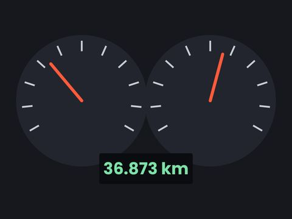
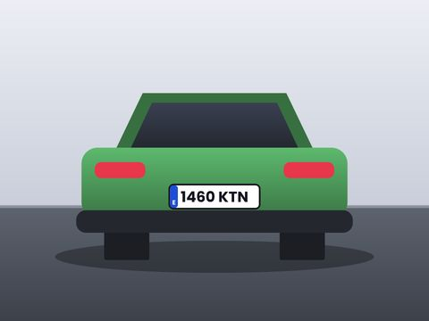
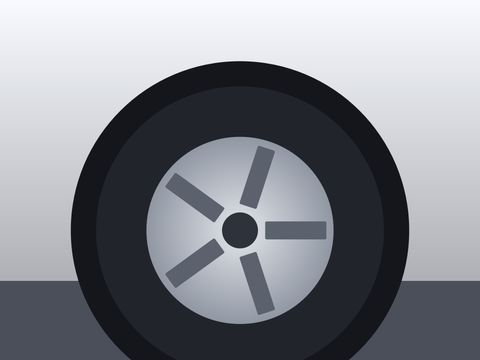
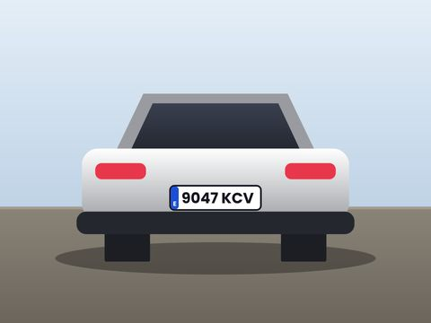
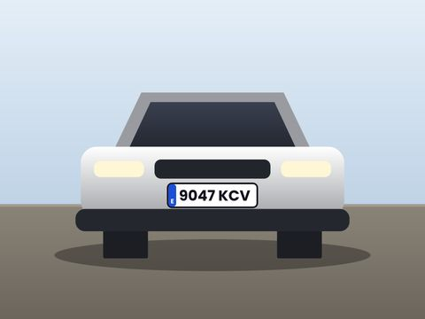

Las fotos, en el formato que te pidan.
Arrastra fotos o carpetas y pásalas de HEIC a JPG, a PNG, WebP o TIFF, o júntalas en un PDF por carpeta. Conserva la fecha, los datos y el tamaño de cada foto, a la máxima calidad, y si quieres quita el GPS o les pone un nombre común. Gratuito y sin límite de fotos.
Windows 10 y 11 · gratuito y sin anuncios · procesado local
Siniestro 4417 · 248 fotos HEIC
A JPG · con su fecha · sin GPS · los originales no se tocan

IMG_4581.HEIC→ IMG_4581.jpg · 12/10/2026 09:14Hecho
Siniestro 4417→ Siniestro 4417.pdf · 248 páginasHechoDel formato que tienes al que te piden, en tres pasos
Todo el procesado se hace en tu ordenador: no se sube ninguna foto.
- 01
Arrastra fotos o carpetas
HEIC del iPhone, JPG, PNG, WebP o TIFF, con todas sus subcarpetas. También desde el botón derecho del Explorador.
- 02
Elige el formato
JPG, PNG, WebP, HEIC, TIFF o PDF, y las opciones: conservar los datos, quitar el GPS o renombrar.
- 03
Listo, al lado
Lo convertido se guarda en una carpeta nueva junto a la original, con la misma estructura. Los originales no se modifican.

Lo que hace falta para cambiar el formato de un reportaje
Para peritos, talleres y tramitadores que reciben fotos en un formato y las tienen que entregar en otro.
Seis formatos
JPG, PNG, WebP, HEIC y TIFF, o todas las fotos en un PDF. Cada formato explica para qué sirve.
Un PDF por carpeta
Una foto por página, en A4 vertical u horizontal según la foto, en orden de nombre. Para adjuntar o imprimir el reportaje.
Fecha y datos intactos
Conserva la fecha y hora de captura, el modelo del móvil y el perfil de color. La orientación se aplica a la imagen.
Sin geolocalización
Si lo marcas, elimina las coordenadas GPS de las fotos. La fecha y la hora se conservan.
Renombrar en bloque
Ponles a todas un nombre común numerado: «Siniestro 2026-0412 (1).jpg», «(2)»…
Originales intactos
Lo convertido va a una carpeta nueva al lado, con las mismas subcarpetas. Los originales no se modifican.
El reportaje entero, en un solo archivo
Elige «PDF» y las fotos de cada carpeta se juntan en un documento, listo para adjuntar o imprimir.
- Una foto por página, en A4 vertical u horizontal según la foto.
- En orden de nombre, como están en la carpeta.
- Un PDF por carpeta: con varias carpetas, uno de cada.



1 · IMG_4581.jpgConvertir es gratis. Clasificar por matrícula, cuando lo necesites.
Sin anuncios, sin tarjeta y sin límite de fotos; solo se pide un correo al abrirlo por primera vez. Nada de webs de conversión a las que subir las fotos del siniestro. El Conversor cambia el formato y el Compresor deja las fotos ligeras; si además quieres una carpeta por vehículo, eso lo hace PeritoLab Matrículas.
PeritoLab Conversor
Para entregar las fotos en otro formato
sin tarjeta y sin anuncios
- JPG, PNG, WebP, HEIC, TIFF y PDF
- Fecha y datos intactos
- Sin GPS y renombrar
- Subcarpetas a cualquier nivel
PeritoLab Matrículas
Para clasificar el reportaje de cada vehículo
desde · 30 días gratis, sin tarjeta
- Reconocimiento de matrículas
- Una carpeta por vehículo
- Reportaje fotográfico en PDF
- Conversión y compresión incluidas
Lo que nos suelen preguntar
¿Es gratuito de verdad?
Sí, sin límite de fotos, sin tarjeta y sin anuncios. Es nuestra forma de que conozcas PeritoLab.
¿Por qué pide un correo?
Para saber quién lo usa y poder avisarte de algo importante del Conversor, como un fallo grave o un cambio en sus condiciones. Las novedades y ofertas solo llegan si marcas la casilla, que es aparte y opcional, y puedes darte de baja con un clic.
¿A qué formatos convierte?
A JPG, PNG, WebP, HEIC y TIFF, y también a PDF: un archivo por carpeta, con una foto por página en A4. Lee JPG, PNG, HEIC del iPhone, WebP, TIFF y BMP.
¿Se pierde la fecha de las fotos?
No. Se conservan la fecha y hora de captura, el modelo del móvil y el perfil de color, y la orientación se aplica a la imagen. Si quieres, quita también la ubicación GPS.
¿Se pierde calidad?
No. El Conversor no comprime: cada foto conserva su tamaño en píxeles y se guarda a la máxima calidad. PNG y TIFF no pierden nada, y en JPG, WebP o HEIC la diferencia con la original no se aprecia. En el PDF, las que ya son JPG van tal cual. Si lo que quieres es que pesen menos, eso lo hace PeritoLab Compresor. Los originales no se modifican.
¿Necesito conexión a internet?
Para convertir, no. Solo se conecta para registrar tu correo, comprobar si hay versiones nuevas y enviar estadísticas de uso (cuántas fotos conviertes, nunca las fotos), que puedes desactivar en «Acerca de». El detalle está en la política de privacidad.
¿En qué ordenadores funciona?
En Windows 10 y 11 de 64 bits. Se instala en segundos y te avisa de cada versión nueva para actualizarlo con un clic.
¿Y si las fotos pesan demasiado?
Para eso está PeritoLab Compresor, también gratuito: fija un peso máximo por foto para las plataformas de las aseguradoras.
Las fotos del siniestro, en el formato que te pidan
Gratuito, sin anuncios y sin subir las fotos a ninguna web.
¿Dudas? Escríbenos a contacto.peritolab@gmail.com